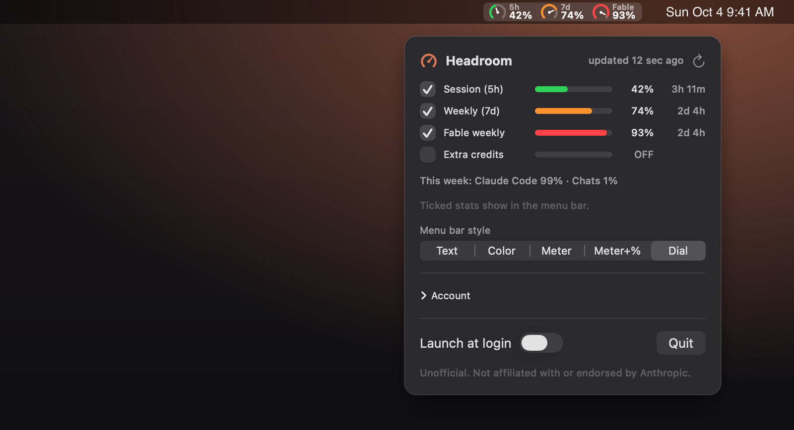
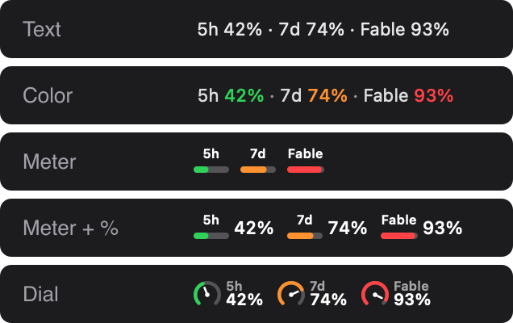

Headroom
Your Claude usage limits, live in the macOS menu bar.
Green, amber, red: know before you hit the limit.
Download for macOSFree & open source · macOS 14+ · GitHub

Pick a style

Get started
- Download, drag Headroom to Applications, open it.
- It uses your Claude Code login, or paste a token under Account.
- Tick the limits you want in the menu bar.